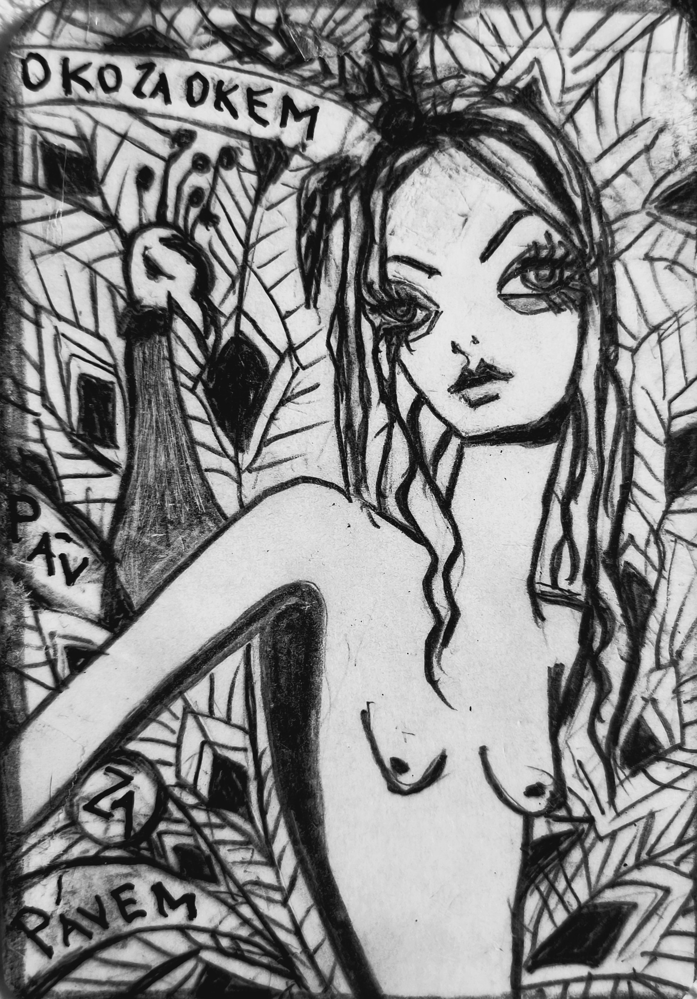

Zapsáno rukou, která nechtěla nic vysvětlit.
O PÁVOVI
Pohádka o pávovi
Oko za okem, páv za pávem – a nikdo neví proč.
—
Byl jednou jeden páv, který měl tolik ok na ocase, že se mu začaly dívat zpátky.
Ne on na svět, ale svět na něj – skrz jeho vlastní pera.
A to byl problém.
—
Protože když se díváš na svět skrz sebe, všechno vypadá jako ty.
A páv si začal myslet, že celý svět je páv.
Že stromy jsou pávové, jen bez per.
Že mraky jsou pávové, co se rozplynuli.
A že myš je jen páv, co se zapomněl rozvinout.
—
A tak začal pávy počítat.
Ne podle počtu nohou, ale podle počtu ok.
Kdo měl víc než jedno oko, byl podezřelý.
Kdo měl méně než jedno, byl prorok.
—
Jednou potkal lemura, co se díval jen na stranu.
Páv se zarazil: „To je páv, co se otočil dovnitř.“
Pak potkal kocoura, co krkal tečky.
„To je páv, co spolkl interpunkci.“
—
A když potkal zaječici, co prošla ohněm, řekl:
„To je páv, co se přepálil.“
—
A tak vznikla nová teorie:
Každé zvíře je páv v jiném stádiu rozpadu.
A každé oko je jen zrcadlo, co se snaží zapomenout, co vidělo.
—
Páv si začal odtrhávat pera.
Ne proto, že by chtěl být méně krásný.
Ale proto, že chtěl být méně páv.
—
A když mu zbylo jen jedno oko, konečně uviděl:
Že není páv.
Že je pohádka.
—
A že pohádka se nedá rozvinout jako ocas.